二月的金門，空氣裡帶著海風特有的冽意，天空遠比想像中湛藍。這趟三天兩夜的離島之行，對我們一家四口而言別具意義。不僅是一場期待已久的親子自助小旅行，更包含了一項屬於全家人的共同挑戰：一起參加年度的金門大橋通車紀念暨金門馬拉松 休閒組 5K 賽事。
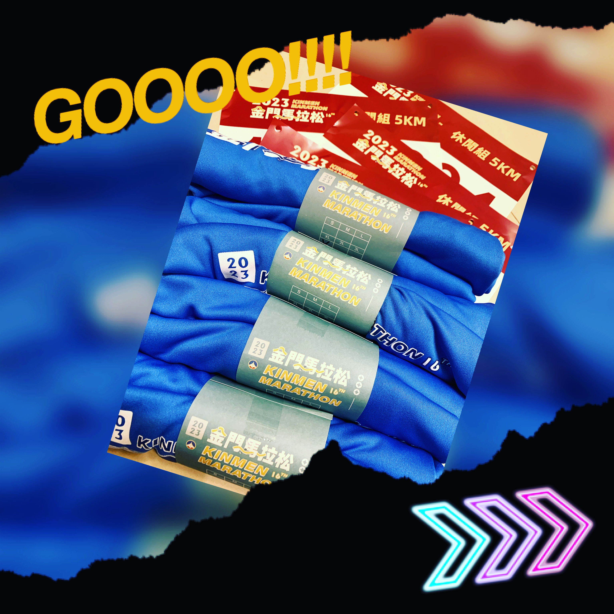 |
| 註：二月早晚溫差大且海風強，這時間來到金門又加上有慢跑行程，強烈建議採用「洋蔥式穿法」，並準備防風外套與帽子，避免吹風受涼影響出遊興致。 |
自從金門大橋通車後，烈嶼（小金門）不再需要依賴渡輪班次才能抵達。這座連接金門本島與烈嶼的壯麗長橋，成了我們此行最期待的風景。我們租了一輛車，帶著兩個孩子，以自由揮灑的節奏，展開了一段兼具運動挑戰、戰地歷史與離島風光的跨海跑旅。
Day 1：潮汐奇觀與跨海長橋，開車駛向小金門的風采
飛機降落在尚義機場時，陽光正好透出雲層。在機場順利辦妥租車手續後，我們隨即開啟這趟自駕旅程。四人座的車子裡裝滿了行李、跑鞋，以及孩子們對這座戰地島嶼的好奇心。
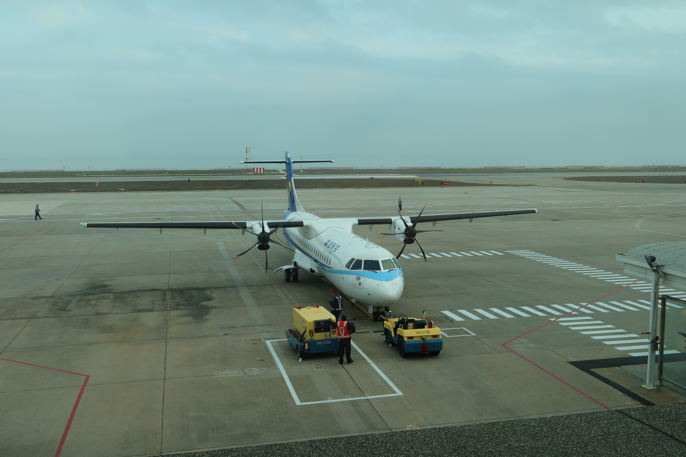 |
第一天的行程充滿驚喜。在前往小金門前，我們特別配合潮汐時間造訪了建功嶼。這座被稱為「金門版摩西分海」的小島，唯有在退潮時才會露出石板步道。
我們踏著微微濕潤的石板路向島上走去，兩旁站立著四座巨大高聳的「牡蠣人」地景藝術作品，這是來自芬蘭藝術家的兩岸造景藝術，孩子們興奮地在巨人腳下穿梭合照。島上保留著完善的碉堡與堡壘設施，站在岸邊遠眺兩岸風光，讓人真實感受到這座島嶼特殊的地理與歷史定位。
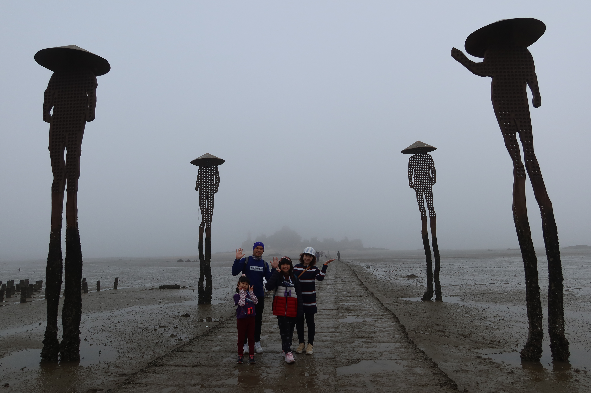 |
| 註：若計畫造訪建功嶼，出發前務必先查詢當日的退潮時間，才能安全順利登島的喔！ |
緊接著的重頭戲，自然是體驗通車後的「金門大橋」。過去前往小金門，必須配合水頭碼頭的渡輪時刻表，如今只需輕踩油門，沿著寬敞的橋面一路向前。車子緩緩行駛在橋上，兩側是湛藍無垠的海域，強勁的海風迎面掠過，橋身如同一條巨龍橫跨海峽。孩子們趴在車窗旁發出陣陣驚呼，眼前的視野開闊得讓人心綽神怡。
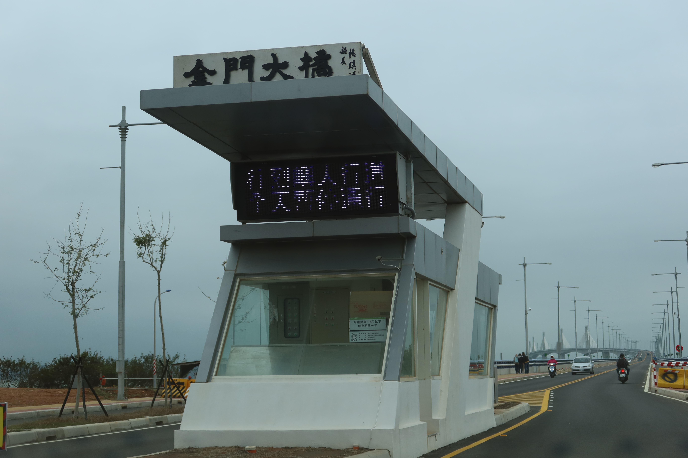 |
跨過大橋，我們順暢地進入烈嶼。第一站來到了沙溪堡，這裡位於小金門的最西端，擁有絕佳的海景視野與地質景觀。沿著木棧道走下海岸，黑色的岩石與浪花交織出雄偉的景致，遠處還能清晰看見廈門的高樓天際線。孩子們在安全的步道上探索，感受著戰地前線特殊的歷史餘溫與自然壯麗。
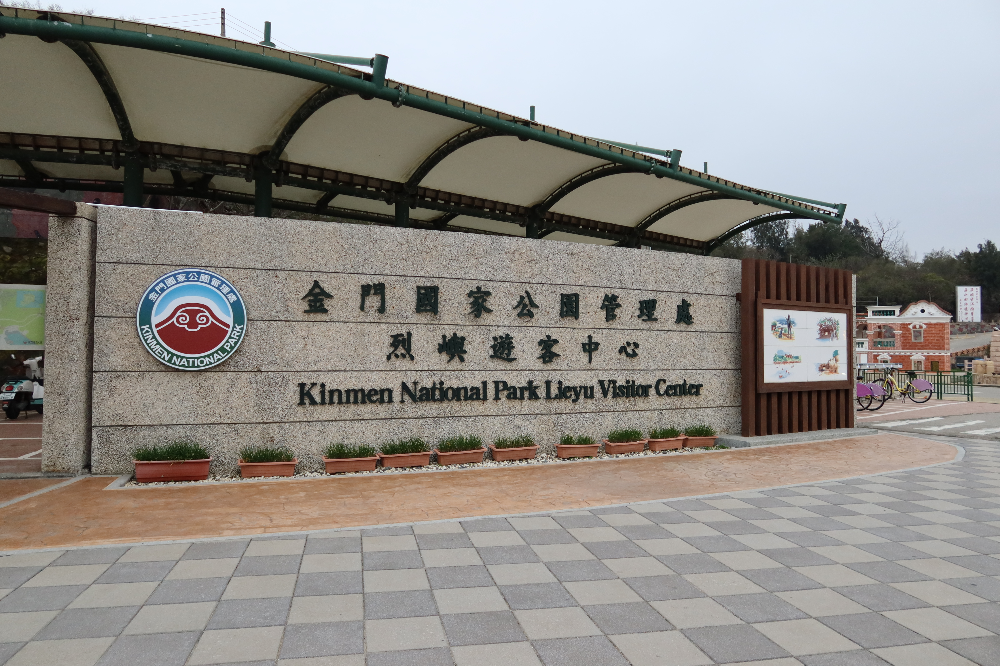 |
傍晚時分，我們來到小金門的黃厝，享用著名的芋頭冰與在地芋頭料理。小金門的芋頭口感綿密鬆軟，入口即化，無論是鹹食芋頭燴飯還是甜品芋頭牛奶，都征服了全家人的味蕾。夜幕低垂時，我們再次開車踏上金門大橋，遠眺大橋點亮彩色的燈光，宛如一條耀眼的光廊橫跨海上，為第一天的行程劃下夢幻的句點。
Day 2：雙腳丈量戰地，一家四口齊奔跑的 5K 馬拉松與古厝探險
清晨六點，金門的空氣裡帶著清冽的晨霧。這一天是行程的核心 —— 金門馬拉松。
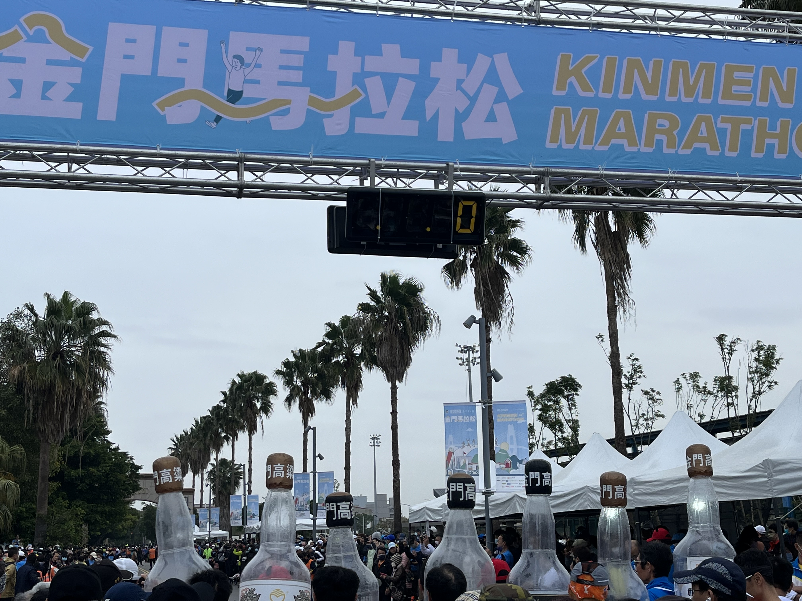 |
金門馬拉松素以濃厚的戰地特色與熱情的鄉親加油聲聞名。這次我們全家動員，一家四口齊心參加了「休閒組 5K」的賽事。當起跑槍聲響起，我們大手拉小手，邁開輕快的步伐加入奔跑的人潮中。
5K 的距離對孩子們來說既具挑戰性又不會過於負擔，一路上我們邊跑邊互相打氣，路線穿梭於林蔭大道與戰地遺跡之間，路旁老老少少站著熱情的鄉親加油團，敲鑼打鼓為大家應援，遞上熱茶與金門特有的補給品，那份真摯的熱情讓孩子們越跑越有勁。
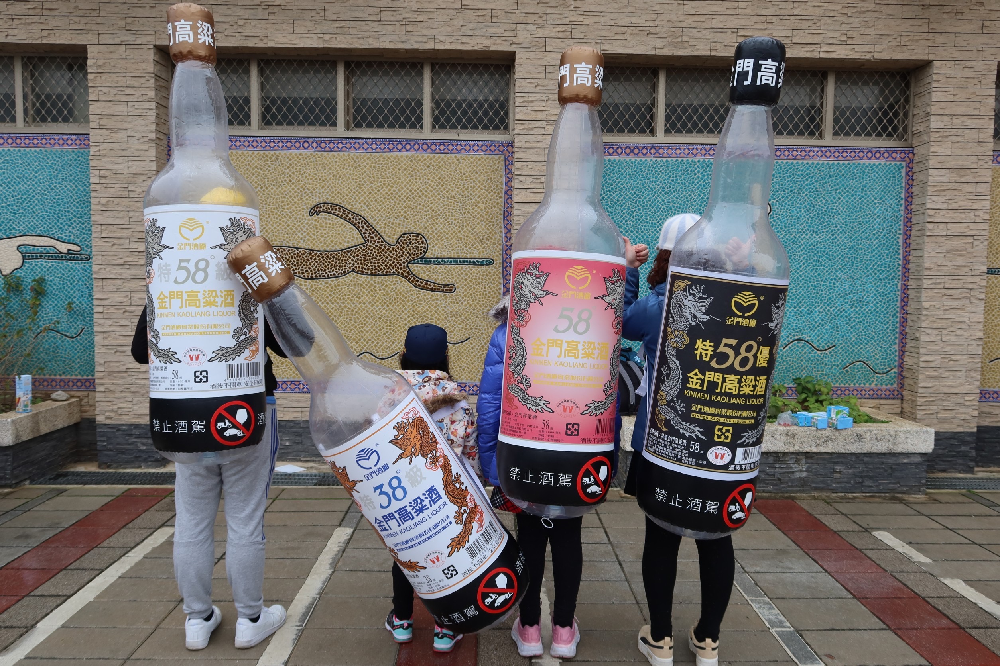 |
全家人一起開心地衝過 5K 終點線，順利完賽的那刻，心中滿是筆墨難以形容的成就感！最讓人驚喜的是，參加金門馬拉松除了獲得完賽紀念品外，還會贈送一瓶賽事限定的金門高粱紀念酒（未成年請勿飲酒喔！）。
這瓶印有賽事圖騰與金門意象的紀念酒，沉甸甸地裝載著我們一家四口共同跨越終點線的汗水與榮耀，對我們來說這不僅是一份禮物，更是這趟跑旅中最有意義、極具收藏價值的紀念品。
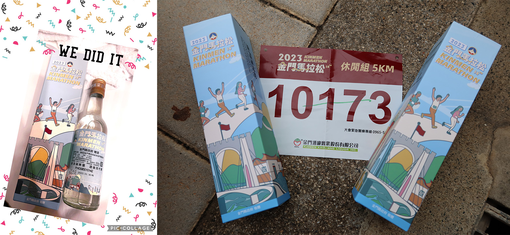 |
| 註：金門馬拉松（包含休閒組）期間機票與住宿極為緊俏，建議至少提前半年前關注賽事公告並預訂機票與住宿，若要租車也要提早預約！ |
跑完馬拉松後，全家肚皮早已咕嚕作響。來到金門，絕對不能錯過最鼎鼎有名的在地酒糟牛肉！因為金門高粱酒廠豐富的酒糟產量，這裡飼養的牛肉質特別鮮嫩滑口。
我們特地安排了一頓熱氣騰騰的酒糟全牛火鍋當作全家人的「完賽慶功大餐」。當店家將滾燙濃郁的高粱牛骨湯頭直接沖淋在透光的薄切溫體牛肉片上時，肉片瞬間呈現誘人的粉紅色澤，入口即化、鮮甜無比！孩子們一口接一口，大口喝湯、大口吃肉，剛跑完步消耗的體力在一瞬間得到了最大的滿足與療癒，這絕對是金門最具代表性的味蕾記憶。
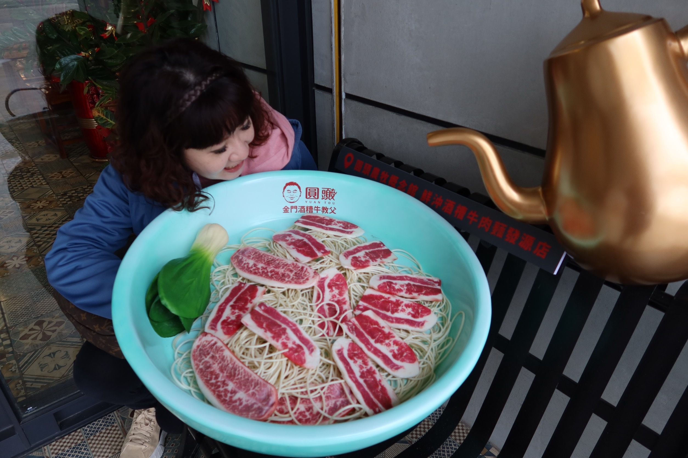 |
飽餐一頓後，我們展開了深度的文化探訪，開車來到國片《軍中樂園》的主要拍攝地-陽翟老街（陽翟大街）。走進這條老街，彷彿瞬間穿過時光隧道，回到了 1960 年代十萬大軍駐紮的戰地歲月。街道兩旁完好保留著當時復刻的美容院、冰果室、撞球間、澡堂，以及最具象徵性的「金東電影院」。
牆面上塗刷著濃濃時代感的軍事標語，訴說著一段段只有在那個戰亂與對峙時代才會存在的特殊歷史。當年無數遠離家鄉、身處前線的年輕士兵，在這裡尋求心靈的寄託與慰藉，而國片《軍中樂園》正深刻描繪了那段夾雜著無奈、鄉愁與時代悲歡的故事。我們輕聲向孩子講述著當年阿兵哥與前線小鎮的故事，讓孩子在拍照打卡之餘，也能體會到當前和平歲月的珍貴。
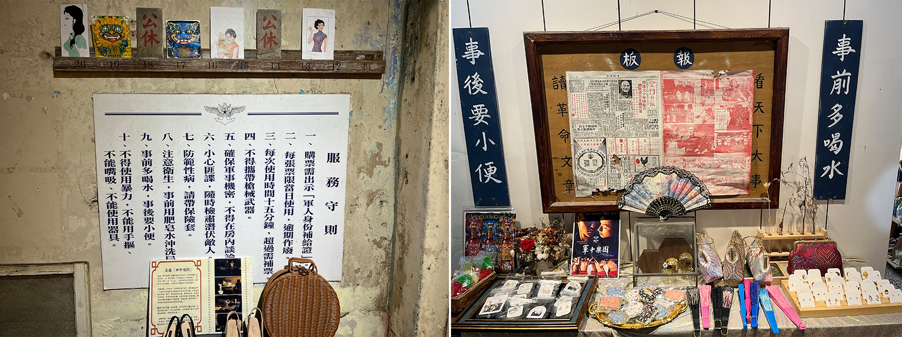 |
稍微休息後，我們開車前往位於金沙鎮的沙美老街（沙美摩洛哥）。這裡原本是傳統的老舊街區，因頹屋經過重新整修與黃土色的泥牆配色，呈現出濃厚的北非沙漠異國風情，因而獲得了「沙美摩洛哥」的美名。孩子們穿梭在宛如城堡般的土黃色巷弄與拱門之間，玩起了躲貓貓與拍照打卡，古老閩南聚落與異國風情的碰撞，給了我們完全不同的視覺與文化體驗。
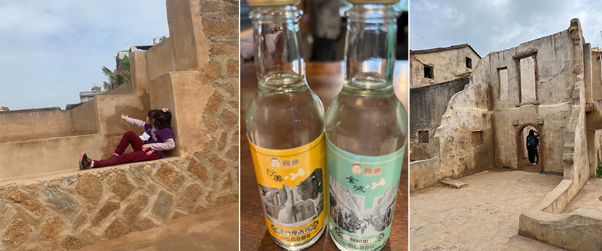 |
接著我們展開一場文化探險之旅。我們帶著孩子漫步於水頭聚落，欣賞充滿故事的得月樓與洋樓建築。孩子們拿著小相機，穿梭在紅磚古厝的花磚與燕尾脊之間，透過尋找建築上的特殊雕飾，體驗了一場生動的文化尋寶之旅。
黃昏時刻，我們造訪了著名的慈湖三角堡。孩子們踩著沙灘，看著海岸線上排列整齊的軌條砦，在遊戲中感受到了歷史的厚重與當下的和平之美。
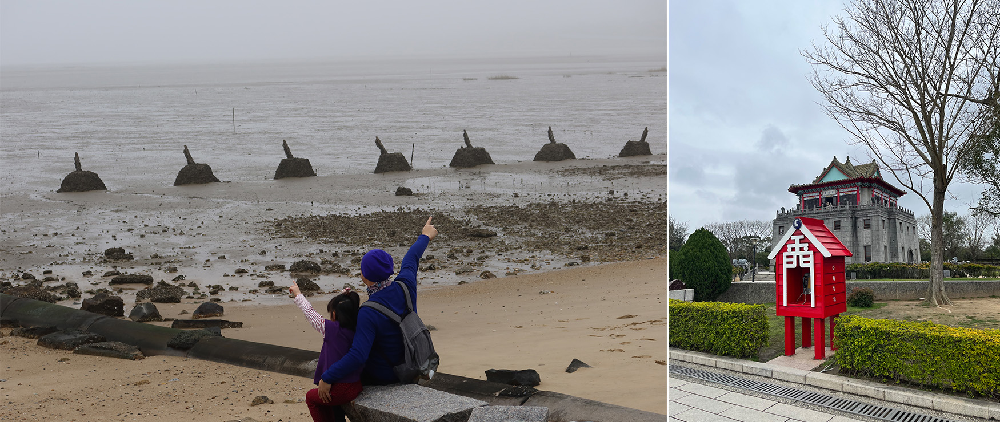 |
Day 3：人文與戰地交織，留戀閩南采風與戰地遺跡
行程最後一天，我們採取隨意漫遊的節奏。租車自駕的優勢在於行程極具彈性，能隨時根據孩子們的精神狀況調整停靠點。
我們首先前往翟山坑道。這座由人工在花崗岩中鑿出的水道坑道，規模令人嘆為觀止。步入坑道，涼爽的空氣與幽暗的光線立刻營造出神秘的氛圍。坑道內的水面平靜如鏡，倒映著兩側陡峭的岩壁，孩子們低聲討論著當年士兵如何鑿開這些堅硬的花崗岩，眼中充滿了驚奇。
離開坑道後，我們驅車前往山外老街與周邊特色聚落采風，尋找隱身於村落各處的「風獅爺」。金門的風獅爺姿態各異，有的威風凜凜，有的憨態可掬，全家人就像在進行一場實體搜集遊戲，每找到一座風獅爺，孩子們便興高采烈地與其合照。
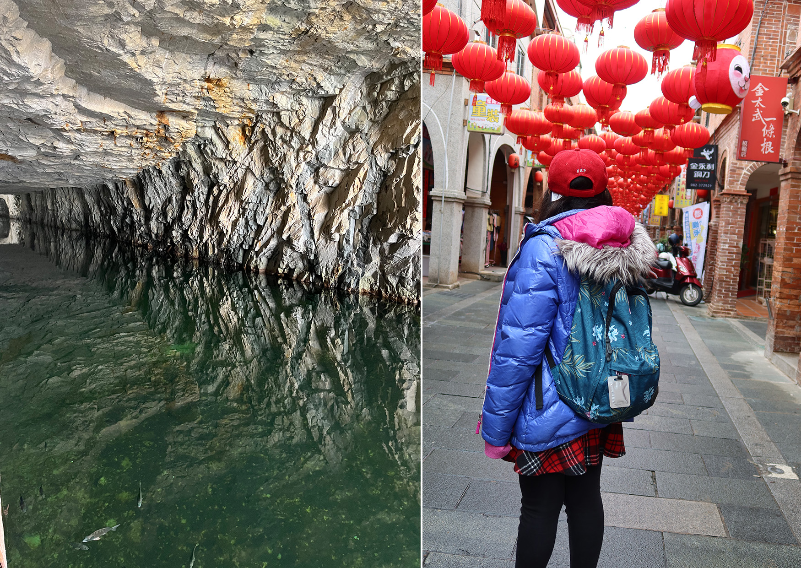 |
午餐時間，我們造訪了當地的特色小吃店，品嚐了熱騰騰的金門廣東粥、香酥的油條與廣受好評的炒泡麵。金門的廣東粥熬煮至米粒全融，搭配新鮮肉丸與蛋花，在二月的微微寒意中喝下一碗，全身都暖和了起來。
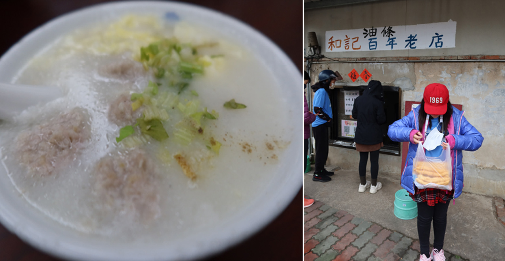 |
臨行前，我們前往特產店挑選了香醇的酒糟牛肉乾、貢糖與麵線作為伴手禮，隨後開車返回機場還車，搭上返回台灣的班機。
這趟二月的金門跨海跑旅，在夕陽與雲海中劃下了完美的句點。
對我們而言，金門不再只是課本上的戰地名詞，而是一段段親自踩踏過、體會過的溫度。從建功嶼的潮汐步道、沙美摩洛哥的異國風情，到金門大橋通車後帶來的便捷，這座島嶼處處充滿著令人驚喜的魅力。而金門馬拉松 5K 賽道上全家人齊心邁步的汗水、獨一無二的金門高粱紀念酒，以及那令人難忘的鮮美溫體酒糟牛肉，都為這趟親子旅行增添了滿滿的凝聚力、美味與成就感。
自駕的自由、跨海大橋的壯麗、古厝聚落的人文底蘊，以及馬拉松賽道上全家並肩作戰的歡笑聲，交織成我們心中最深刻的離島記憶。